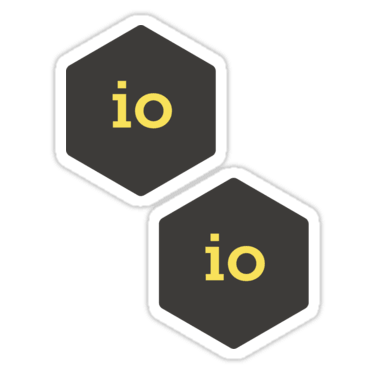
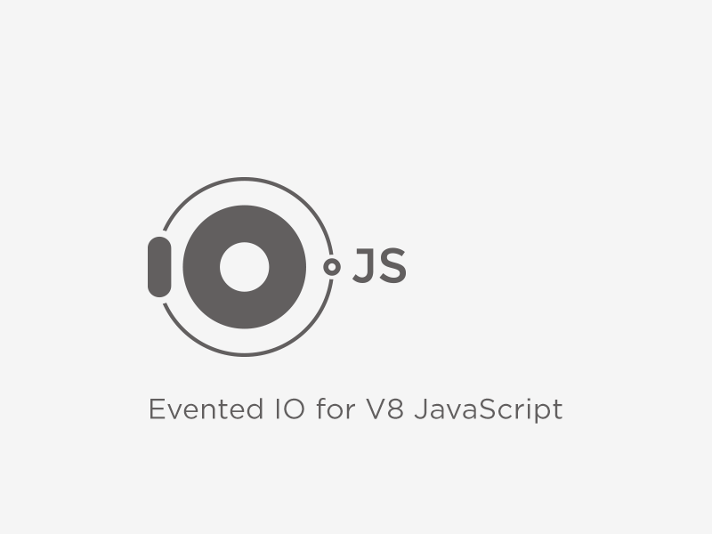

History of Node.js
Node.js was created by Ryan Dahl in 2009. It was created due to the need of technology for real-time web application. All the development history of node.js are available at Development Changelog.
While, some major changes on node.js are presented below
1995
- JavaScript
-

JavaScript was created in 1995 by Brendan Eich while working at Netscape. JavaScript made the foundation for browser side programming as per events. It was widely adopted by other browsers too as ECMA script.
2008
- Google V8 Engine
-

Google v8 Engine is a JavaScript Engine created by google to execute JS scripts in Chrome Browser. While its inception, v8 Engine was game changer because it compiles JS to machine code before executing, instead traditional interpretation as bytecode. And it executes JS codes in server side for Node.js applications.
2009
- Node.JS was published
-

Node.js first version was published in 2009, during European JS Conference. The first version used v8 engine and already had core functions such as event loop, and low level I/O.
2011
- npm package manager
-
npm is the package manager for node.js created in 2011. It allows to share the packages over the web. However its major task is to update compatible packages in the projects. It also has huge number of package collection. It has been the important motivator for adoption of node.js
- Microsoft
-

Microsoft partnered with node.js team to create native windows versions of node.js.
2012
- Dahl Stepped Aside
-
Rayn Dahl, the founder of node.js stepped down as head of development team. Isaac Schlueter, npm creater was promoted to take Rayn Dahl place.
2014
- io.js
-

Fedor Indutny started io.js as fork of Node.js. Node.js development was seen under corporate influence as its progress was controlled by Joyent Foundation. Due to internal conflict over Joyent's governance, io.js was created as an open governance alternative with a separate technical committee.
- Node v0.12.0 (Stable) released
-

The major version of node.js v0.12.0 was released. The version contained major technology upgrade and bug fixing. Among major changes, infinity 'HTTP maxSockets' from limited 5 was important.
2015
- Merging node.js and io.js
-

Node.js and io.js are merged together under node.js Umbrella. As, node.js accepted open governance model from the help of linux foundation, io.js team voted for the merger.